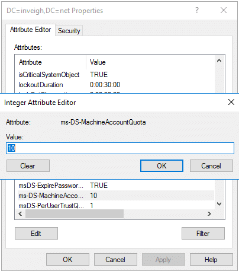

1. MAQ allows unprivileged users to add machine account objects to a domain. By default, an unprivileged user can create 10 machine accounts.

You do not need to do anything special to invoke MAQ. You can simply attempt to add a machine account using an account that has not been directly granted the domain join privilege.
2. The creator account’s SID is stored in the machine account’s ms-DS-CreatorSID attribute. AD populates this attribute only when the creator is not an administrator, or has not been delegated the privilege to add machine accounts.


AD also uses ms-DS-CreatorSID to calculate the current count against MAQ. From a testing perspective, keep in mind the attribute is an arrow pointing to the creator account, even with nested MAQ usage. Therefore, using machine accounts created through MAQ does not fully shield the creator account.


If the defense is aware of the ms-DS-CreatorSID attribute though, there is probably a good chance they have already disabled MAQ.
3. Machine accounts created through MAQ are placed into the Domain Computers group. In situations where the Domain Computers group has been granted extra privilege, it’s important to remember that this privilege also extends to unprivileged users through MAQ. For example, you may find Domain Computers listed within a local Administrators group.

As a slight extension to this rule, be on the lookout for automation that places computers in OUs and/or groups based on portions of the machine account name. You may be able to leverage the automation through MAQ.
4. The creator account is granted write access to some machine account object attributes. Normally, this includes the following attributes: - AccountDisabled
- description
- displayName
- DnsHostName
- ServicePrincipalName
- userParameters
- userAccountControl
- msDS-AdditionalDnsHostName
- msDS-AllowedToActOnBehalfOfOtherIdentity
- samAccountName
You can modify these attributes as needed.

However, the permitted values of some attributes are still subject to validation.
5. The machine account itself has write access to some of its own attributes. The list includes the msDS-SupportedEncryptionTypes attribute which can have an impact on the negotiated Kerberos encryption method. Modern Windows OS builds will set this attribute to 28 during the process of joining a domain.

6. The attribute validation is strict at the time the machine account is added. Basically, the attribute values need to match up. If they don’t match, the add will fail such as in this example where the samAccountName is incorrect.

Strangely, after a machine account is added, some of the validation rules are relaxed.
7. The samAccountName can be changed to anything that doesn’t match a samAccountName already present in a domain. Changing this attribute can be helpful for blending in activities with legitimate traffic such as by stripping the ‘$’ character or by matching an in-use account naming convention. Interestingly, the samAccountName can even end in a space which permits mimicking any existing domain account.

Here is how the fake ‘Administrator’ account appears in action.

Note, changing the samAccountName will not change the actual machine account object name. Therefore, you can have a machine account object that blends in with the naming convention while also having a completely different samAccountName.
8. Adding a machine account creates 4 SPNs. The list includes the following: - HOST/MachineAccountName
- HOST/MachineAccountName.domain.name
- RestrictedKrbHost/MachineAccountName
- RestrictedKrbhost/MachineAccountName.domain.name
As an example, here is the default SPN list for the ‘test.inveigh.net’ machine account.

After you add the machine account, you can append or replace the list with any SPN that passes validation.

If you modify the samAccountName, DnsHostname, or msDS-AdditionalDnsHostName attributes, the SPN list will automatically update with the new values. The default SPNs do cover a lot of use cases though. So, you won’t always need to modify the list. If more information on SPNs is needed, Sean Metcalf has really good list at AdSecurity which includes details on Host and RestrictedKrbHost.
9. Machine accounts do not have logon locally privilege. However, machine accounts work just fine from the command line with tools that accept credentials directly or through ‘runas /netlonly’. The tasks can include enumeration, adding DNS records, or really just about any non-GUI action that applies to a user account.

10. Machine accounts added through MAQ cannot be deleted by the unprivileged creator account. To completely cleanup AD after using MAQ, you will need to elevate domain privilege or pass the task along to your client. You can however disable the account with the unprivileged creator account.